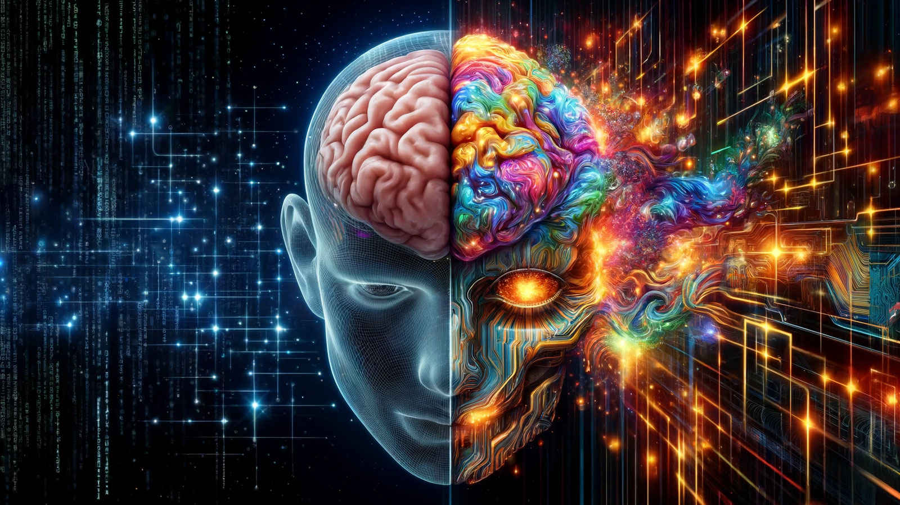

Teknoloji Dünyasında Yenilikler
Son yıllarda, yapay zekâ (YZ) ile yapılan çalışmalar, teknolojinin insan yaratıcılığına nasıl katkıda bulunabileceğini ortaya koymaktadır. Birçok araştırma, AI'ın geleneksel iş süreçlerini ve yaratıcı süreçleri nasıl iyileştirebileceğini tartışmaktadır. AI, özellikle tasarım, sanat ve içerik üretimi gibi alanlarda büyük bir devrim yaratma potansiyeline sahiptir.
YZ ve İnsan Zekasını Destekleyen Araştırmalar
Gelişen yapay zekâ sistemleri, insanların iş gücünü daha verimli hale getirmeyi vaat ediyor...
Anasayfa'ya dön